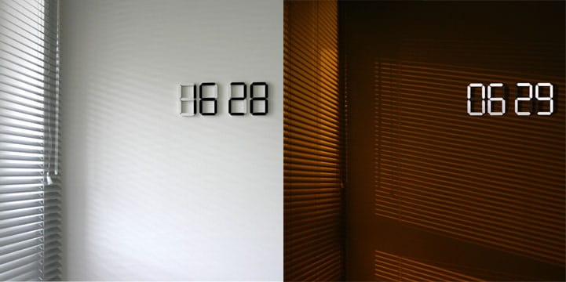
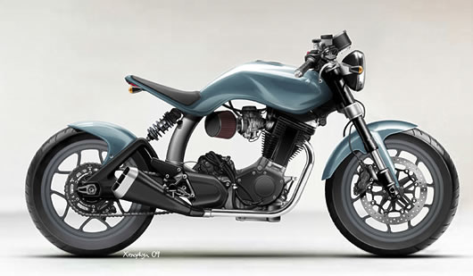

Ça va
А вот у него еще совершенно блестящее "Major vs. Minor" :)
И Soft Power, кстати, тоже кайфовый!
А вот у него еще совершенно блестящее "Major vs. Minor" :)
И Soft Power, кстати, тоже кайфовый!
Ай, какой приятный альбом!
Или вот еще, например, TXT ISLAND :)

Офигенские часы!
Много музыки из видео в последнее время. Классный альбом.
Задорный прогрессив-хаус бетз выпендрежей. Желающие получать в свой дропбокс — велкам в комментарии.
Наверное, было что-то еще, но уже не вспомню.
В 151-м прогкасте очень ничего так 4-й трек:
Найти можно, например, тут.

Ах, какие байки кайфовые!